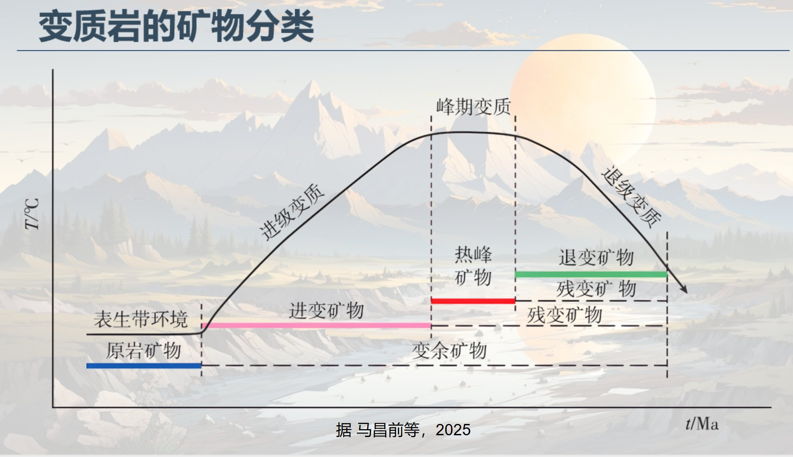

📊 Chapter Overview & Cross-Links
| Chapter | Core Topic | Dominant Factor | Typical Rock | Tectonic Setting |
|---|---|---|---|---|
| Ch.1 | Basic concepts & classification of metamorphism | Temperature · Pressure · Fluids (overview) | —— | All Types |
| Ch.2 | Textures · Fabrics · Minerals · Classification | Metamorphic grade | Slate·Phyllite·Schist·Gneiss·Marble·Quartzite | All |
| Ch.3 | Thermodynamics & phase equilibrium | T · P · Fluid activity | Various mineral assemblages | All |
| Ch.4 | Contact Metamorphic | T-dominant (heat source), low P | Hornfels · Skarn · Marble | intrusion contact zone |
| Ch.5 | Metasomatic Rocks | Fluid-dominant (chemical potential) | Skarn · Greisen · Propylite · Chloritized rock | Hydrothermal system |
| Ch.6 | Migmatite | Ultra-high T + fluid melting | Augen · Stromatic · Ptygmatic · Migmatitic granite | Deep metamorphic core complex |
| Ch.7 | Dynamic Metamorphic Rocks | Stress-strain dominant, low T | Tectonic breccia · Cataclasite · Mylonite · Pseudotachylyte | Fault zone · Ductile shear zone |
| Ch.8 | Regional Metamorphic Rocks | T + P rising together | Low Greenschist → Blueschist → Eclogite → Amphibolite → Granulite | Orogenic belt · Collision zone |
| Ch.9 | Metamorphic Rocks & Plate Tectonics | Tectonic Settingcontrols T/Ppaths | Facies belt assemblages | All plate boundary types |
Chapter 01
Introduction
Definition · Types · Controls · Significance
Core Definitions
Metamorphism:
Under subsurface conditions (temperature, pressure, chemically active fluids), pre-existing rocks (protoliths) undergo changes in mineral composition, chemical composition, texture and structure while remaining solid. Excludes weathering and diagenesis; melting marks the end of metamorphism.
Metamorphic Rock:
Rock transformed by metamorphism; one of the three major rock types, constituting ~27.4% (by volume) of continental crust.
Controls on Metamorphism (Five Major Factors)
| Factor | Type / Range | Primary Effect | Associated Metamorphic Type |
|---|---|---|---|
| Temperature T | 150–900°C (up to 1000+°C in UHP) | Promotes recrystallization, polymorphic transitions, dehydration & decarbonation | Contact, Regional |
| Pressure P | Lithostatic: 0.1–3.5 GPa Fluid pressure Directed stress |
Lithostatic P controls mineral density phases; stress produces foliation & crystalloblastic textures | High-P/UHP; Dynamic |
| Chemically Active Fluids | Mainly H₂O, CO₂; Cl, F, B subordinate | Catalyze reactions, add/remove components (metasomatism), lower solidus | Metasomatic, Migmatization |
| Time | 10⁶–10⁸ yr | Allows sufficient time for equilibrium crystallization | All types |
| Protolith Composition | Bulk chemistry, mineral assemblage, texture | Determines final mineral assemblage (same T-P, different protolith → different rock) | All types |
Classification of Metamorphism (by Dominant Factor)
| Type | Dominant Factor | Scale | Typical Rock |
|---|---|---|---|
| Contact Thermal Metamorphism | T↑ (magmatic heat) | Local (near intrusions) | Hornfels, Marble |
| Metasomatism | Fluid chemistry | Local to moderate | Skarn, Greisen |
| Regional Metamorphism | T+P (rising together) | Regional (orogenic belts) | Schist, Gneiss, Eclogite |
| Dynamic Metamorphism | Directed stress | Linear (fault zones) | Cataclasite, Mylonite |
| Migmatization | Ultra-high T + fluid → partial melting | Deep metamorphic core | Migmatite, Migmatitic granite |
| Shock Metamorphism | Instantaneous ultra-high P | Impact craters | Coesite, Stishovite, Tektite |
| Burial Metamorphism | T+P (low grade) | Deep sedimentary basins | Zeolite-facies rocks |
The P-T-t Path Concept
Metamorphic rocks record the T-P-time history (P-T-t path) of rocks within the crust. Clockwise paths indicate continental collision orogenesis; counterclockwise paths indicate extension or mantle upwelling. This is the key "thermobarometer".
Chapter 02
Characteristics & Classification of Metamorphic Rocks
Minerals · Textures · Structures · Classification Schemes
Minerals of Metamorphic Rocks
Metamorphic Minerals (Characteristic Minerals)are the hallmarks of metamorphic rocks, stable only under metamorphic conditions, e.g.: kyanite, andalusite, sillimanite (Al₂SiO₅ polymorphs), garnet, glaucophane, omphacite, coesite, etc.
| Mineral Group | Representative Minerals | Indicator Significance |
|---|---|---|
| Al₂SiO₅ Polymorphs | Andalusite (low-P), Kyanite (high-P), Sillimanite (high-T) | P-T indicators |
| Garnet Group | Almandine, Pyrope, Grossular, Uvarovite | Thermobarometer; RI varies with composition |
| Amphibole Group | Glaucophane (high-P, low-T), Hornblende (medium), Tremolite (low) | Facies indicator |
| Pyroxene Group | Omphacite, Jadeite (high-P), Enstatite (high-T granulite) | High-P/UHP indicator |
| UHP Indicator Minerals | Coesite (SiO₂ high-P phase), Microdiamond | >2.5 GPa, deep continental subduction |
| Low-grade Minerals | Zeolite, Smectite → Illite → Chlorite, Sericite | Burial Metamorphism, low Greenschist facies |
Textures of Metamorphic Rocks
| Texture Name | Characteristics | Origin |
|---|---|---|
| Crystalloblastic Texture | Recrystallized mineral grains; crystal form may surpass igneous rocks | Solid-state recrystallization |
| Granoblastic Texture | Equigranular minerals, random orientation | Isostatic uniform heating |
| Lepidoblastic Texture | Platy minerals (micas) aligned parallel | Recrystallization under directed stress |
| Nematoblastic Texture | Minerals appear fibrous | Pressure solution or infilling |
| Porphyroblastic Texture | Large crystals (porphyroblasts) in fine-grained matrix | Uneven growth; garnet is typical |
| Palimpsest (Relict) Texture(Relict Texture) | Relict protolith textures: blastopsammitic, blastoporphyritic | Low metamorphic grade |
| Cataclastic Texture | Shattered minerals, brecciated | Brittle dynamic metamorphism |
| Mylonitic Texture | Very fine-grained matrix + rotated porphyroclasts | Ductile shear |
Fabrics of Metamorphic Rocks
| FabricType | Characteristics | Typical Rock |
|---|---|---|
| Slaty Cleavage | Very fine cleavage; minerals invisible to naked eye | Slate |
| Phyllitic Structure | Silky sheen; sericite/chlorite microcrystals | Phyllite |
| Schistosity | Coarse platy minerals (mica, chlorite) visible & oriented | Schist |
| Gneissosity | Light (feldspar, quartz) & dark (amphibole, pyroxene) bands alternating | Gneiss |
| Massive Structure | Random orientation, even mineral distribution | Marble, Quartzite, Hornfels |
| Banded Structure | Alternating compositional or grain-size bands | Migmatite |
| Augen Structure | Elliptical porphyroblasts (e.g. feldspar) in foliated matrix | Augen migmatite / mylonite |
Classification Scheme of Metamorphic Rocks
The Ma Changqian edition adopts adual genetic-petrologic classification:first byOrigindivided intoContact Metamorphic, Regional Metamorphic Rocks, Dynamic Metamorphic Rocksetc.;then byRocklogicCharacteristics(textural, Fabric, Mineral)naming.
| Rock | Metamorphic Grade | Fabric | Index Minerals | Protolith |
|---|---|---|---|---|
| Slate | Very low | Slaty | Sericite · Chlorite · Clay minerals (fine) | Pelite, Siltstone |
| Phyllite | Low | Phyllitic | Sericite · Chlorite · minor Quartz | Pelite |
| Schist | Low–Medium | Schistose | Mica, Amphibole, Chlorite (platy minerals) | Pelite, Basic volcanic rocks |
| Gneiss | Medium–High | Gneissose | Feldspar + Quartz (>50%) + mafic minerals | Pelite, Felsic igneous rocks |
| Granulite | High (Granulite facies) | Massive–Gneissose | Enstatite · Hypersthene · Garnet (NO amphibole) | Basic/Felsic |
| Eclogite | High-P to UHP | Massive | Pyrope + Omphacite (only 2 major minerals!) | Basic igneous (Basalt/Gabbro) |
| Blueschist | High-P, Low-T | Schistose | Glaucophane + Lawsonite ± Albite | Basic igneous rocks |
| Marble | Low–High | Massive | Calcite/Dolomite (recrystallized) | Limestone/Dolostone |
| Quartzite | Low–High | Massive | Quartz (>75%, recrystallized) | Pure sandstone/Chert |
| Hornfels | Contact thermal | Massive, dense, hard | Varies with protolith (commonly cordierite, andalusite) | Pelite (contact zone) |
Chapter 03
Metamorphic Reactions & Processes
Reaction Types · Thermodynamics · Facies · P-T-t Paths
Major Metamorphic Reaction Types
| Reaction Type | Definition | Typical Example |
|---|---|---|
| Dehydration Reaction | Hydrous minerals break down, releasing H₂O | Muscovite → K-feldspar + Sillimanite + H₂O |
| Decarbonation Reaction | Carbonate minerals break down, releasing CO₂ | Calcite + Quartz → Wollastonite + CO₂ |
| Solid-Solid Reaction | Direct reaction between minerals without fluid | Albite → Jadeite + Quartz |
| Polymorphic Transition | Same composition, different crystal structure | And⇌Ky⇌Sil; α-Quartz→Coesite→Stishovite |
| Metasomatic Reaction | External components introduced by fluids replace original minerals | Ca²⁺ metasomatism → calc-silicate skarn |
| Melting Reaction | Exceeding solidus, producing melt | Muscovite breakdown → incipient melting; muscovite granite |
Metamorphic Facies
Metamorphic Facies (Eskola, 1915): A set of metamorphic rocks formed under specific T-P conditions, characterized by consistent mineral paragenesis. Different protoliths in the same facies have distinct mineral assemblages, yet share the same P-T conditions.
| Metamorphic Facies | Temp. (°C) | Press. (GPa) | Index Mineral Assemblage (pelitic protolith) | Typical Rock |
|---|---|---|---|---|
| Zeolite Facies | <250 | <0.3 | Laumontite · Analcime | Burial metamorphic rocks |
| Prehnite-Pumpellyite Facies | 200–350 | 0.2–0.5 | Prehnite · Pumpellyite | Low-grade basic rocks |
| Blueschist facies(glaucophane facies) | 200–500 | 0.5–1.5 | Glaucophane · Lawsonite · Phengite | Blueschist |
| Greenschist Facies | 300–500 | 0.2–0.8 | Chlorite · Sericite · Albite · Epidote | Greenschist |
| Amphibolite Facies | 450–700 | 0.3–1.2 | Almandine · Biotite · Hornblende · Plagioclase | Amphibolite, Gneiss |
| Granulite Facies | 700–1000 | 0.5–2.0 | Hypersthene · Almandine · Plagioclase (NO amphibole) | Granulite |
| Eclogite Facies | 500–1000 | >1.5 | Pyrope + Omphacite | Eclogite |
| Hornfels Facies | 400–800 | <0.4(LowP) | Cordierite · Andalusite (low-P, high-T) | Hornfels |
Metamorphic Grade — Classification by Metamorphic Intensity
Metamorphic Grade: A qualitative or semi-quantitative classification of metamorphic intensity — the maximum temperature and pressure conditions experienced by a rock. Higher grade = higher T-P conditions = more complete recrystallization = generally coarser mineral grains.
Key Point: Metamorphic Grade ≠ Metamorphic Facies — Grade is a rough intensity ranking (low/medium/high), while facies is a precise P-T-based mineral assemblage classification.
One grade may span parts of multiple adjacent facies; one facies may be classified into different grades depending on regional context.
One grade may span parts of multiple adjacent facies; one facies may be classified into different grades depending on regional context.
| Grade | Temp Range | Press Range | Index Minerals | Typical Rocks | Texture |
|---|---|---|---|---|---|
| Low Grade | <400°C | <0.4 GPa | Zeolite, Chlorite, Sericite, Montmorillonite, Calcite | Slate, Phyllite, Greenschist, Marble | Fine-cryptocrystalline; relict textures common |
| Medium Grade | 400~600°C | 0.3~0.9 GPa | Biotite, Garnet, Hornblende, Muscovite, Staurolite | Schist, Amphibolite, Mica-gneiss | Medium-coarse blastitic; foliation developed |
| High Grade | >600°C (up to 1000°C+) | >0.5 GPa | Hypersthene, Sillimanite, Diopside, Pyrope+Omphacite | Gneiss, Granulite, Eclogite | Coarse blastitic; massive or gneissic |
📊 Quick Field Assessment of Metamorphic Grade
- By grain size: Can you see individual minerals with naked eye? No→Low grade; barely visible flakes→Medium grade; clearly coarse grains→High grade
- By fabric: Slaty(Low) → Phyllitic(Low) → Schistose(Medium) → Gneissic(High) → Massive(High)
- By key minerals: Glaucophane→high P but NOT necessarily high T; Hypersthene→high T; Coesite→ultra-high PRESSURE
- Pitfall:"High grade" ≠ "highest T"! Eclogite is "high-grade" but characterized by ultra-high pressure, not ultra-high temperature
Extended scheme — Four-tier classification (some textbooks):
Adds "Very Low Grade" (<200°C) to the three-tier system: Zeolite and Prehnite-Pumpellyite facies dominate, corresponding to burial metamorphism. Protolith sedimentary features are largely preserved with only minor mineral transformations.
Adds "Very Low Grade" (<200°C) to the three-tier system: Zeolite and Prehnite-Pumpellyite facies dominate, corresponding to burial metamorphism. Protolith sedimentary features are largely preserved with only minor mineral transformations.
The Al₂SiO₅ Triple Point — Key to P-T Calibration
The triple point of Al₂SiO₅ polymorphs (andalusite · kyanite · sillimanite) is at ~500°C and ~0.38 GPa.
- Andalusite: low-P, low-T (shallow intrusion contact zones)
- Kyanite:High P, Medium T (prograde regional metamorphism)
- Sillimanite: high-T (medium to high P; represents retrograde elevated temperatures)
Barrovian vs. Buchan Zones — Two Classic Metamorphic Zonal Sequences
| Feature | 🏔 Barrovian Zones | 🌋 Buchan Zones |
|---|---|---|
| Author / Year | George Barrow, 1893, Scottish Highlands | W. Q. Kennedy, 1948, NE Scotland (Buchan) |
| P-TType | Moderate P/T (Barrovian) Geothermal gradient 15–25°C/km |
Low P/T (high-T, low-P type) High dT/dP >30°C/km |
| Tectonic Setting | Interior of continental collision orogens (moderate depth) | Back-arc rifts, near magmatic arcs, around shallow intrusions |
| Index Mineral Sequence (pelitic protolith, low→high grade) |
① Chlorite zone ② Biotite zone ③ Garnet zone ④ Staurolite zone ⑤ Kyanite zone ⑥ Sillimanite zone |
① Chlorite zone ② Biotite zone ③ Garnet zone ④ Cordierite zone ↔ low-P indicator ⑤ Andalusite zone ↔ low-P hallmark ⑥ Sillimanite zone |
| Key Distinguishing Minerals | Kyanite (high-P), Staurolite (medium-P) | Andalusite (low-P), Cordierite (low-P) NO kyanite, NO staurolite |
| Al₂SiO₅ Phase | Kyanite → Sillimanite (high-P path) | Andalusite → Sillimanite (low-P path) |
| Representative Facies Series | MediumIntermediate facies Series(Greenschist→Amphibolite→Granulite) | Low P/T series (Hornfels→Amphibolite→Granulite) |
| Type Locality | Central Scottish Highlands, Alps, Dabie Mountains | NE Scotland (Buchan), Ryoke Belt (Japan), Cooma (Australia) |
📐 P-T Path Diagram: Barrovian vs. Buchan Zones
▲ Dashed orange: Al₂SiO₅ phase boundaries; Blue: Barrovian P-T path; Red: Buchan P-T path; Yellow: Triple point (~500°C/0.38 GPa)
🗺 Planar Zonal Distribution Diagram (Scottish model)
▲ Plan view:etc.grade lineOuter toinnerMetamorphic gradeincreasing.Buchan zoneabsent; Kyanite and St zone,is vs. Barrovian zonemost obviousof field distinction.
Key Exam Mnemonic:
Barrovian (high-P path): Chl—Bt—Grt—St—Ky—Sil (moderate geotherm, collision orogen)
Buchan zonegolow-P path:Chl—Bt—Grt—Cordierite—Andalusite—Sillimanite(high geothermT,back-arc/shallowintrusion )
Both zonesCommon features:①starting point and end point faciessame(both start fromChloritestarting,with Sillimaniteending);②IndexMineralwas established byBarrowwho established,etc.grade linedividing each zone.
most Key field distinction:PresentNoneKyanite + Staurolite;LowP zoneappearsAndalusite + Cordierite.
Barrovian (high-P path): Chl—Bt—Grt—St—Ky—Sil (moderate geotherm, collision orogen)
Buchan zonegolow-P path:Chl—Bt—Grt—Cordierite—Andalusite—Sillimanite(high geothermT,back-arc/shallowintrusion )
Both zonesCommon features:①starting point and end point faciessame(both start fromChloritestarting,with Sillimaniteending);②IndexMineralwas established byBarrowwho established,etc.grade linedividing each zone.
most Key field distinction:PresentNoneKyanite + Staurolite;LowP zoneappearsAndalusite + Cordierite.
Index Mineralis the mineral that first becomes stable in a given metamorphic zone, marking its minimum T-P conditions.
Isograd: a line on a map connecting the first occurrence of an index mineral, equivalent to the surface outcrop of an isothermal-isobaric plane.
Note: Index minerals are specific to pelitic protoliths (Al-rich sediments) because the Al₂SiO₅ system is most P-T sensitive; carbonates or basic rocks have different zonal minerals.
Isograd: a line on a map connecting the first occurrence of an index mineral, equivalent to the surface outcrop of an isothermal-isobaric plane.
Note: Index minerals are specific to pelitic protoliths (Al-rich sediments) because the Al₂SiO₅ system is most P-T sensitive; carbonates or basic rocks have different zonal minerals.
Mineral Generation Sequence Along P-T-t Paths
Law of Mineral Generation Sequence: Metamorphic minerals do not form simultaneously — they appear sequentially along the P-T-t path:
Pre-metamorphic minerals = protolith relics · Prograde minerals = formed during T-P increase · Peak minerals = coexisting at maximum T/P (paragenetic assemblage) · Retrograde minerals = overprinted during cooling/decompression
Only the peak paragenetic assemblage can accurately determine metamorphic P-T conditions; retrograde minerals only reflect the cooling path and cannot be used for peak thermobarometry.
Pre-metamorphic minerals = protolith relics · Prograde minerals = formed during T-P increase · Peak minerals = coexisting at maximum T/P (paragenetic assemblage) · Retrograde minerals = overprinted during cooling/decompression
Only the peak paragenetic assemblage can accurately determine metamorphic P-T conditions; retrograde minerals only reflect the cooling path and cannot be used for peak thermobarometry.

▲ Fig: Mineral generation sequence along a P-T-t path. Only peak parageneses constrain P-T conditions; retrograde minerals reflect cooling only.
How to read this diagram:
① Pre-metamorphic minerals (Cal/Chl/Srp/Ep/Act etc.): inherited from protolith or very early stage — do NOT use for grade determination
② Prograde minerals: form sequentially along the rising P-T path; each zone marked by the first appearance of its index mineral
③ Peak paragenetic assemblage: mineral set coexisting at maximum T/P — the ONLY mineral group that constrains metamorphic P-T conditions
④ Retrograde minerals (Chl/Srp/Tlc etc.): hydration/decomposition products during cooling — only indicate the cooling path, NOT valid for peak thermobarometry
⑤ Characteristic metamorphic minerals: vary by protolith — pelitic → Al₂SiO₅ polymorphs, basic → amphibole/pyroxene, carbonate → tremolite/diopside etc.
⑥ Some minerals decompose (breakdown) during retrogression and become unstable
① Pre-metamorphic minerals (Cal/Chl/Srp/Ep/Act etc.): inherited from protolith or very early stage — do NOT use for grade determination
② Prograde minerals: form sequentially along the rising P-T path; each zone marked by the first appearance of its index mineral
③ Peak paragenetic assemblage: mineral set coexisting at maximum T/P — the ONLY mineral group that constrains metamorphic P-T conditions
④ Retrograde minerals (Chl/Srp/Tlc etc.): hydration/decomposition products during cooling — only indicate the cooling path, NOT valid for peak thermobarometry
⑤ Characteristic metamorphic minerals: vary by protolith — pelitic → Al₂SiO₅ polymorphs, basic → amphibole/pyroxene, carbonate → tremolite/diopside etc.
⑥ Some minerals decompose (breakdown) during retrogression and become unstable
Comparison of P-T-t Path Types
| Path Type | Geological Setting | Characteristics |
|---|---|---|
| Clockwise (CW) | Continental collision | Pressurization+heating (subduction) then decompression+cooling (exhumation) |
| Counterclockwise (CCW) | Continental arc, magmatic arc base | Heating first (magmatic) then pressurization, or sustained high-T low-P |
| Isothermal Decompression (ITD) | Rapid exhumation & erosion | Decompression rate >> cooling rate |
| Isobaric Heating (IBC) | Magmatic intrusion heating | Characteristic of contact metamorphism |
Chapter 04
Contact Metamorphic
Thermal Contact · Contact Metasomatism · Zonation
Core Definitions
Contact Metamorphism: Magma intrusions bake wall rocks; thermal conduction is the main driving force at low pressure (shallow conditions), forming a contact aureole. Key features: T↑, low P (<0.3 GPa), nearly closed chemical system, limited scale (meters to kilometers).
Contact Aureole Zonation (Pelitic Wall Rock)
Temperature decreases outward from the intrusive contact, forming concentric metamorphic zones:
Inner zone (high T):CordieriteHornfels zone → AndalusiteHornfels zone → Spotted Slate zone → Outer zone (low T): Unmetamorphosed wall rock
Inner zone (high T):CordieriteHornfels zone → AndalusiteHornfels zone → Spotted Slate zone → Outer zone (low T): Unmetamorphosed wall rock
Comparison of Contact Metamorphic Rock Types
| Rock | Protolith | main minerals | Texture / Fabric | Diagnostic Feature |
|---|---|---|---|---|
| Hornfels(Hornfels) | Pelitic, silty | Cordierite, Andalusite, Feldspar, Quartz(varying with T) | Massive; granoblastic or porphyroblastic | Dense, hard, conchoidal fracture; hallmark of thermal metamorphism |
| Marble(Marble) | Limestone, Dolostone | Calcite ± Dolomite; may contain diopside, grossular | Massive; granoblastic | White crystalline grains; recrystallized texture |
| Quartzite(Quartzite) | Pure quartz sandstone | Quartz (>75%) | Massive; granoblastic | Hard; distinguished from sandstone by recrystallization |
| Spotted Slate | Pelite | Sericite · Chlorite + early porphyroblasts (cordierite, biotite) | Slaty; spotted (porphyroblastic) | Far from intrusion; low-T zone product |
| Skarn | Carbonate (calcic) | Grossular, Diopside, Wollastonite, Scapolite (calc-silicates) | Massive; granoblastic | Contact metasomatic; common mineralization (Cu, Fe, W) |
Contact Metamorphic vs Regional Metamorphic Rocks Key field distinction
| Characteristics | Contact Metamorphic | Regional Metamorphic Rocks |
|---|---|---|
| Pressure | Low(<0.3 GPa) | Medium–High (0.3–3.5 GPa) |
| Temperature | Low to high; but P remains low even at high T | T rises together with P |
| Foliation | Generally absent (mainly isostatic) | Schistosity, gneissosity well developed |
| Scale | Tens of m to km (local) | Hundreds to thousands of km |
| Typical Minerals | Andalusite, Cordierite(LowPindicator) | Kyanite, Sillimanite, Garnet(MediumHighP) |
| Typical Rock | Hornfels, Skarn | Schist, Gneiss, Eclogite |
Chapter 05
Metasomatic Rocks
Metasomatism · Rock Types · Alteration Zoning
Core Definitions
Metasomatism:Chemically active fluids (hydrothermal, gaseous) exchange matter with country rock, introducing external components while removing original ones, altering the bulk chemical composition. Key distinction from thermal metamorphism: volume nearly constant (isovolumetric), chemistry is an open system.
Metasomatic Types & Representative Rocks
| Metasomatic Type | Fluid Character | Typical Rock | main minerals | Economic Significance |
|---|---|---|---|---|
| Skarnization | Ca-Si enriched, high-T hydrothermal | Skarn | Grandite garnet, Diopside, Wollastonite, Scapolite | Fe, Cu, W, Mo, Pb-Zn deposits |
| Greisenization | F-B-bearing acidic hydrothermal | Greisen | Quartz + Muscovite (± Topaz, Fluorite, Cassiterite) | Sn, W, Mo, Be deposits |
| Propylitization | CO₂-H₂O low-T hydrothermal | Propylite | Chlorite + Epidote + Calcite + Pyrite ± Albite | Outer alteration of porphyry Cu deposits |
| Potassic Alteration | K⁺-rich, high-T hydrothermal | Potassic-altered rock | K-feldspar + Biotite | Core alteration of porphyry Cu deposits |
| Phyllic / Sericitic Alteration | Medium-low T K-SiO₂ hydrothermal | Phyllonite | Sericite + Quartz ± Pyrite | Epithermal gold deposits |
| Serpentinization | Low-T H₂O reacting with ultramafic rocks | Serpentinite | Serpentine (platy/fibrous) ± Talc ± Magnetite | Asbestos deposits; mantle rock indicator |
| Carbonatization | CO₂ hydrothermal | Carbonate veins | Calcite · Dolomite · Ankerite | Hydrothermal alteration halo indicator |
Skarn Zonation (Contact Zone Example)
Typical zonation from intrusion → carbonate wall rock (decreasing T, evolving fluid):
[innerskarn zone(silicateMineraldeveloped,Grossular zone)]→[Medium zone(Diopside zone)]→[outer skarn zone(Wollastonite·direction Scapolite zone)]→[Marblezone]
[innerskarn zone(silicateMineraldeveloped,Grossular zone)]→[Medium zone(Diopside zone)]→[outer skarn zone(Wollastonite·direction Scapolite zone)]→[Marblezone]
Porphyry Copper Alteration Zonation (Classic Lowell-Guilbert Model)
From core outward::Potassic zone(K-feldspar + Biotite)→ Phyllic / Sericitic Alteration zone(Sericite mica+Quartz+Pyrite)→ Argillic zone(HighKaolinite+Montmorillonite)→ Propylitization zone(Chlorite+epidote)
Mineralization concentrates between the potassic and phyllic zones.
Mineralization concentrates between the potassic and phyllic zones.
Principles of Metasomatism
Korzhinskii Component Theory:Components are divided into inert (volume-conserving reference) and mobile (transported by fluids). The metasomatic front advances outward from fluid conduits, producing zonation.
Chapter 06
Migmatite
Migmatization · Types · Genesis · Granite Relationship
Core Definitions
Migmatization: Under ultra-metamorphic conditions (T ≥ 650°C + fluid), deep metamorphic rocks undergo partial melting (anatexis) or injection by felsic melts/fluids. Mechanical or chemical mixing of protolith and new veins produces migmatite — a transitional product between metamorphic and igneous rocks.
Two Components of Migmatite
| Component | Term | Nature | Composition |
|---|---|---|---|
| Dark Refractory Part | Paleosome | Relict high-grade metamorphic matrix | Fe-Mg rich; biotite · amphibole |
| Light Neosome | Neosome | Melt-derived or injected felsic veins | Si-Al-K rich; feldspar · quartz |
| Note: Neosome can be subdivided into Leucosome (felsic melt fraction) and Melanosome (Fe-Mg-rich residual selvage). | |||
Migmatite Types & Distinctions
| Type | FabricCharacteristics | Neosome Morphology | Degree of Mixing |
|---|---|---|---|
| Stromatic Migmatite | Light veins alternating with dark matrix bands | Parallel bands, relatively uniform width | Low–Medium |
| Augen Migmatite | Elliptical feldspar megacrysts in foliated matrix | Rotated, stretched feldspar augen | Medium |
| Ptygmatic Migmatite | Light veins folded into convolute shapes | Highly contorted, strongly deformed | Medium |
| Diktyonitic Migmatite | Light veins cross-cutting matrix in a network | Irregular stockwork | Medium—High |
| Agmatitic Migmatite | Paleosome fragments floating in neosome | Neosome as matrix | High |
| Migmatitic Granite | Homogeneous; igneous features dominant | Paleosome nearly vanished | Very high (ultra-metamorphic granite) |
MigmatizationOriginMechanism
| Mechanism | Explanation |
|---|---|
| Injection Theory | External magma/hydrothermal fluids injected into metamorphic rocks |
| Anatexis (Partial Melting) | In-situ melting of protolith producing melt + refractory residue; now the mainstream view |
| Metasomatic Theory | Fluid metasomatism causing local felsification; chemical mixing |
Migmatite vs. Gneiss — Key Differences
Gneiss: homogeneous mineral bands; both light (felsic) and dark minerals are metamorphic recrystallization products; no distinct melt veins.
Migmatite: has distinct neosome (melt-derived felsic veins) cutting through or irregularly distributed in paleosome; heterogeneous mixing.
Migmatite: has distinct neosome (melt-derived felsic veins) cutting through or irregularly distributed in paleosome; heterogeneous mixing.
Chapter 07
Dynamic Metamorphic Rocks
Cataclasite Series · Mylonite Series · Pseudotachylyte
Core Definitions
Dynamic Metamorphism:Under strongFabricstressconditions, ,rocks undergo mechanical fracturing, deformation and recrystallizationofgrade process.maindevelopedin fault zones zone and Ductile shear zone.Temperature faciespairrelativelyLow(does not requireHighT),Directed stressisDominant Factor.
Brittle vs. Ductile Deformation Mechanisms
| Deformation Mechanism | Conditions | Products | Typical Rock |
|---|---|---|---|
| Brittle Fracture | Low T, high strain rate, shallow | Fragments, breccia | Tectonic breccia · Cataclasite |
| Ductile Flow | Higher T (Qtz >300°C; Fsp >450°C), low strain rate, deeper | Stretching lineation, S-C fabric, rotated porphyroclasts | Mylonite · Ultramylonite |
| Frictional Melting | Very rapid strain rate (seismic rupture) | Glassy melt | Pseudotachylyte |
Dynamic Metamorphic Rocks SeriesDetailedComparison
| Rock Name | Matrix Fraction | Dominant Texture | MineralCharacteristics | Tectonic Setting |
|---|---|---|---|---|
| Fault Gouge | >90% fine-grained | Clayey, unconsolidated | Clay minerals dominant | Shallow fault |
| Tectonic Breccia | clasts>30%,angular | Cataclastic Texture,clastic | Clasts retain protolith minerals; matrix: fine rock powder | Brittle fault zone |
| Cataclasite | Matrix 10–50% | Cataclastic; angular clasts | Shattered minerals, undulose extinction | Brittle-ductile transition |
| Mylonite | Fine matrix 50–90%; rotated porphyroclasts | Mylonitic Texture,S-Cfabric | Quartz ribbons, rotated feldspar porphyroclasts | Ductile shear zone |
| Ultramylonite | matrix>90%,very fine-grained | Dense, very fine granular | Nearly complete recrystallization; porphyroclasts gone | Strong ductile shear zonedeep |
| Pseudotachylyte(Pseudotachylyte) | Glassy matrix with fragments | Vitreous, flow structure | Glass + microlites; resembles volcanic rock | Seismic fault surface (seismic melt) |
| Kyanite rock / Mylonitic Gneiss | Ductile deformation + metamorphism | Foliated or banded | Quartz lenses, kyanite | deep-levelDuctile shear zone+grade |
Kinematic Indicators in Mylonites
Sfoliation(foliation plane):Mineralstabletoalignment plane.
Cfoliation(shear plane):actual shear displacement plane, vs. SPlagioclaseintersection (10°~40°).
S-C fabric angular relationships determine shear sense — critical for identifying fault kinematics.
σ-type, δ-typeporphyroclasts:rotated aroundFeldsparporphyroclastsofasymmetricasymmetric tails,can indicate shear sensedirection.
Cfoliation(shear plane):actual shear displacement plane, vs. SPlagioclaseintersection (10°~40°).
S-C fabric angular relationships determine shear sense — critical for identifying fault kinematics.
σ-type, δ-typeporphyroclasts:rotated aroundFeldsparporphyroclastsofasymmetricasymmetric tails,can indicate shear sensedirection.
Chapter 08
Regional Metamorphic Rocks
Facies Series · Major Rock Types · Protolith Reconstruction
Core Definitions
Regional Metamorphism:During orogenesis, rocks across vast areas undergo metamorphism under simultaneously rising T and P. Large scale (hundreds to thousands of km²), zonal, forming metamorphic belts. The most widespread metamorphic type on Earth.
Metamorphic Facies Series — Classification by P/T Ratio
Metamorphic Facies Series (Miyashiro, 1961):A sequence of metamorphic facies occurring in a given region, representing a specific geothermal gradient type (P/T ratio). Different tectonic settings produce different geothermal gradients, hence different facies series.
🌋 Four Basic Metamorphic Facies Series — Detailed Comparison
| Series Type | P/T Character | T/D Gradient | Key Mineral Markers | Facies Sequence | Tectonic Setting | Type Localities |
|---|---|---|---|---|---|---|
| High P/T Series (Glaucophane-type) |
High-P, Low-T | <20°C/km | Glaucophane as diagnostic | Zeolite Z → Lawsonite-Albite-Chlorite LA → Blueschist BS → Eclogite E | Oceanic subduction (trench side); Continental deep-subduction (UHP) | Franciscan (CA); Sambagawa (Japan); Dabie-Sulu-Qinling-Kunlun-Tianshan (China) |
| Medium P/T Series (Barrovian-type) |
Med-P, Med-T | 20~40°C/km | Low-T: Kyanite; High-T: Sillimanite | Z → Prehnite-Pumpellyite PP → Greenschist GS → Epidote-Amphibolite EA → Amphibolite A → Granulite G | Classic continental collision orogen interior (medium depth) | Scottish Highlands (Barrow); Alps; Dabie-Sulu core zone |
| Low P/T Series (Buchan-type) |
Low-P, High-T | 40~80°C/km | Low-T: Andalusite; High-T: Sillimanite | Z → PP → GS → Amphibolite A → Granulite G | Back-arc basin; Rift; Magmatic arc flank; Shallow intrusion periphery | Buchan (Scotland); Abukuma (Japan); Cooma (Australia) |
| Very Low P/T Series (Contact-type) |
Very-LowP, Very-HighT | >80°C/km | Andalusite, Cordierite | Albite-Epidote-Hornfels AEH → Hornblende-Hornfels HH → Pyroxene-Hornfels PH | Contact metamorphism aureole (local) | All intrusion contact halos |
🔑 Core Memory Points for Facies Series:
| High P/T | Glaucophane + Eclogite; skips Amphibolite facies; subduction/ultra-deep product |
| Medium P/T | Kyanite→Sillimanite ("Kyanite-type"); full sequence EA→A→G; orogen main body |
| Low P/T | Andalusite→Sillimanite ("Andalusite-type"); skips EA facies; back-arc/rift setting |
| Very Low P/T | Contact zones only; hornfels-facies sequence characteristic |
Connection to Paired Metamorphic Belts: Coexistence of High P/T + Low P/T = Paired Belts!
• Outer belt (trench-side): High P/T (Blueschist ± Eclogite) — represents subducted oceanic crust
• Inner belt (continental-arc side): Low P/T or Very Low P/T (Hornfels / Granulite) — beneath magmatic arc
Classic example: Japan SW — Sambagawa belt (high-P outer) + Ryoke belt (low-P inner)
• Outer belt (trench-side): High P/T (Blueschist ± Eclogite) — represents subducted oceanic crust
• Inner belt (continental-arc side): Low P/T or Very Low P/T (Hornfels / Granulite) — beneath magmatic arc
Classic example: Japan SW — Sambagawa belt (high-P outer) + Ryoke belt (low-P inner)
📋 Quick Reference Table (Condensed)
| Facies Series Type | P/T Characteristics | Facies Sequence | Geothermal Gradient | Tectonic Setting |
|---|---|---|---|---|
| LowP/T facies Series(HighTLowPtype) | Low P/T, high T gradient | Hornfels Facies→Amphibolite Facies→Granulite Facies | >30°C/km | Back-arc, rift, magmatic arc |
| MediumIntermediate facies Series(Barroviantype) | Moderate P/T | Greenschist Facies→Amphibolite Facies→Granulite Facies | 15–30°C/km | Classic orogen (Scottish type) |
| HighP/T facies Series(Blueschisttype) | High P/T, low T gradient | Prehnite-Pumpellyite Facies→Blueschist facies→Eclogite Facies | <10°C/km | Subduction zone |
mainRegional Metamorphic RocksDetailedCharacteristics
| Rock | Metamorphic Facies | main minerals | Texture / Fabric | Protolith |
|---|---|---|---|---|
| Greenschist | Greenschist Facies | Chlorite · Epidote · Albite · Sericite · Calcite | Schistose, green | Basic volcanic (Basalt) |
| Blueschist | Blueschist facies(HighPLowT) | Glaucophane · Lawsonite · Phengite±Garnet | Schistose, blue | Basic igneous rocks(Basaltrock) |
| Mica Schist | Greenschist—Amphibolite Facies | Muscovite + Quartz ± Chlorite, Staurolite, Garnet | Schistose, well-foliated | Pelite |
| Amphibolite | Amphibolite Facies | Hornblende + Plagioclase (± Garnet) | Schistose orMassive | Basic igneous rocks |
| Orthogneiss | Amphibolite—Granulite Facies | Feldspar + Quartz + Amphibole / Pyroxene | Gneissose | Felsic-intermediate igneous (ortho-) |
| Paragneiss | Amphibolite—Granulite Facies | Feldspar + Quartz + Biotite + Almandine | Gneissose | Sandy-pelitic sedimentary (para-) |
| Granulite | Granulite Facies(HighT) | Hypersthene + Plagioclase ± Garnet (basic); K-feldspar + Quartz + Hypersthene (felsic) | Massive–Gneissose;Noneanhydrous minerals dominant | Basic to felsic igneous or metamorphic |
| Eclogite | Eclogite Facies(HighP—UHP HighP) | Pyrope + Omphacite(only 2mainMineral) | Massive,dense,Highdensity | Basalt/Gabbro (oceanic crust) |
| UHP Metamorphic Rocks | UHP HighP facies(>2.5 GPa) | Coesite (pseudomorph), Diamond + Garnet + Omphacite | Massive | Deep continental subduction |
Ortho- vs. Para-Metamorphic Rocks
| Type | Protolith | Criteria | Typical Rock |
|---|---|---|---|
| Ortho-Metamorphic | Derived from igneous protolith | Relict igneous textures; low Rb/Sr; high Zr | Orthogneiss, Amphibolite |
| Para-Metamorphic | Derived from sedimentary protolith | Graphite-bearing; marble interlayers; relict bedding; high Rb/Sr | Paragneiss, Marble, Quartzite |
Regional Metamorphic RocksofMineralthermobarometer
Thermobarometryutilizes mineral-melt/mineral-mineral element partitioning to constrain P-T:
- Garnet-Biotite(Gt-Bi)Temperaturemeter:Fe-Mgelement partitioning
- Garnet-Aluminosilicate-Quartz-PlagioclaseFeldspar(GASP)Pressuremeter
- ChloriteTemperaturemeter
- Quartz-Ilmenite-Rutile(Zr-in-rutile)Temperaturemeter
Chapter 09
Metamorphic Rocks & Plate Tectonics
plate Tectonic Setting·Metamorphic Facies SeriesDistribution·Orogenic zonegrade Evolution
plate Tectonic Setting vs. Metamorphic TypeofpairCorrelation Series
| Tectonic Setting | Geothermal Gradient | DominantMetamorphic Type | TypicalMetamorphic Facies | Typical Rock |
|---|---|---|---|---|
| Subduction Zone (cold) | very Low(<10°C/km) | HighPLowTgrade | Blueschist facies→Eclogite Facies | Blueschist, Eclogite |
| Continental Collision Orogen | Mediumetc.(15~25°C/km) | Regional Metamorphism(Barroviantype) | Greenschist Facies→Amphibolite Facies→Granulite Facies | Schist, Gneiss, Granulite |
| Back-arc Basin / Rift | High(>30°C/km) | LowPHighTgrade (Buchantype) | Hornfels Facies→Amphibolite Facies→Granulite Facies | Hornfels, Granulite |
| Mid-Ocean Ridge(seafloor) | very High(hydrothermal) | Seafloor metamorphism | Zeolite Facies→Greenschist Facies | Serpentinite, GreenSchist |
| Lower Continental Crust | High(long-termstablestable) | Granulite Faciesgrade | Granulite Facies | subcrustGranulite |
| Meteorite Impact | transientUHP HighP | Shock Metamorphism | Shock facies | Coesite, Stishovite, Tektite |
Paireded Metamorphic Belts
Paireded Metamorphic Belts (Miyashiro, 1961):Two parallel metamorphic belts developed simultaneously on opposite sides of an oceanic subduction zone —
- HighP/T zone(outer zone):on the trench side,Blueschist facies/Eclogite Facies,LowTHighP,representssubductionoceanic crust
- Low P/T Belt (inner, arc side):on the continental-arc side,HighTLowP(Hornfels Facies/Granulite Facies),representsrockmagmatic arcsubdirection
UHP metamorphic belt vs. LargeContinentalsubduction
The discovery of coesite/diamond-bearing metamorphic rocks (e.g. Dabie–Sulu UHP terrane) proves continental crust was subducted to >100 km depth. P-T paths show large-clockwise loops (first steep P increase, then rapid exhumation decompression). Exhumation mechanism: buoyancy-driven + channel flow.
P-T-t Paths & Orogenic Cycles
| Stage | Geological Process | P-T Change | Characteristicsgrade Products |
|---|---|---|---|
| Prograde | Subduction & burial; T, P increase | Heating & pressurization along geotherm | Glaucophane, Omphacite, Albite→Jadeite |
| Peak Metamorphism | most Largedepth,most HighT P | T·Pmost Highpoint | Coesite, Pyrope, Omphacite |
| Retrograde | Exhumation; T, P decrease | Cooling & decompression (ITD path) | Coesite→quartz pseudomorph; Omphacite→Amphibole+Plagioclase |
| Final Exhumation | Erosion to surface | Ambient conditions | Present-day field exposures |
eachMetamorphic TypeTectonic SettingCross-Chapter Comparison
🌍 Distribution of Metamorphic Types in Plate Tectonic Framework
- Oceanic plate subducting to trench: → Blueschist facies·Eclogite Facies(HighP/T facies Series)
- Continental arc magmatism: → contactgrade (Hornfels Facies)+ Metasomatic(skarn·Greisenrock)
- Back-arc sustained heating: → Low P/T granulite facies
- Continental collisioncore:→ BarroviantypeRegional Metamorphism(Greenschist→Amphibolite→Granulite)
- Ultra-deep subducted continental crust exhumation: → UHP metamorphic belt
- Fault zone: → Dynamic Metamorphic Rocks(mylonite·Cataclasite)
- Deep high-T metamorphic core: → Migmatization → Migmatitic granite
Cross-Chapter Comparison
Summary of Key Cross-Chapter Distinctions
Confusing Concepts · Rock Distinctions · Factor Comparisons
① Five Metamorphic Types: Core field distinction
| Type | ControllingFactor | Pressure | Temperature | Foliation | Scale | Chemical System |
|---|---|---|---|---|---|---|
| Contact Thermal Metamorphism | T(rockmagmatic heat) | Low | Low—High | None | Small | Closed |
| Metasomatic | fluid-drivenlogic | MediumLow | MediumLow—High | None | Medium | Open |
| Regional Metamorphism | T+P | Medium—High | Medium—High | Strong | Large | NearlyClosed |
| Dynamic Metamorphism | Directed stress | Mediumetc. | Low–Medium | Strongest | Linear | NearlyClosed |
| Migmatization | UHP HighT+melting | MediumHigh | most High | Present | Medium | Semi-open |
② Distinctions Between Similar Rocks
| Rock Paired | Key Distinction |
|---|---|
| Slate vs Phyllite | Slate:Mineralinvisible to naked eye,Noneluster;Phyllite:Sericite micamicrocrystals,silky Sericiteluster,visible fine foliation(higher grade) |
| Phyllite vs Schist | Schist:platy Mineral(mica)visible to naked eye(>0.1mm),coarser schistosity;Phyllite:platy very fine,silky Sericiteluster |
| Schist vs Gneiss | Gneiss:Feldspar+Quartz>50%,maficMineralevenly distributed bands zone;Schist:platy Mineral(micaetc.)>50%,Nonefelsic bands zone |
| mylonite vs Cataclasite | mylonite:ductile deformation,S-Cfabric,porphyroclastsrotated,Mineralrecrystallization;Cataclasite:brittle shattering,angular,Nonerecrystallization |
| Hornfels vs Schist | Hornfels:MassiveNonestableto,contact zoneoutcrop,dense and hard;Schist:strong schistosity,Regional Metamorphism,PresentstabletoMineral |
| Granulite vs Amphibolite | Granulite:Noneamphibole(amphibolehas converted toaspyroxene),contains hypersthenepyroxene,HighTdehydrationProducts;Amphibolite:main mineralsasamphibole+PlagioclaseFeldspar |
| Eclogite vs Amphibolite | Eclogite:contains onlyPyrope + Omphacite,Highdensity,NonePlagioclaseFeldspar;Amphibolite:contains commonamphibole+PlagioclaseFeldspar,Mediumetc.Pressure |
| Blueschist vs Greenschist | Blueschist:glaucophane(HighPLowT),colorblue,subduction zone;Greenschist:Chlorite+epidote(MediumPMediumLowT),colorGreen |
| Skarn (contact) vs. Skarn (metasomatic) | Essentially faciessame,the former emphasizesintrusion contact zoneOrigin;the latter emphasizes fluid-driven compositional change;both with calc-silicateMineralasCharacteristics |
| Migmatite vs granite | Migmatite:Presentpaleosome relics(dark-coloredgrade rockmatrix),heterogeneous;granite:homogeneous,Nonegrade rockrelics |
③ Distinction of Three Al₂SiO₅ Polymorphs (Key Exam Topic)
| Mineral | Crystal System | TemperatureConditions | PressureConditions | TypicalMetamorphic Facies | Appearance |
|---|---|---|---|---|---|
| Andalusite | Plagioclasedirection Crystal System | Low–MediumT | LowP(<0.38 GPa) | Hornfels Facies, LowPgrade zone | Prismatic,square cross-section,Present"hollow cross"(chiastolite variety) |
| Kyanite | Triple-PlagioclaseCrystal System | MediumT | HighP(>0.38 GPa) | Blueschist facies, Amphibolite Faciesprograde | Bladed, blue; hardness varies along vs. across elongation |
| Sillimanite | Plagioclasedirection Crystal System | HighT | Medium—HighPBoth possible | HighTAmphibolite Facies, Granulite Facies | Fibrous or acicular; silky luster |
④ eachgrade Factorpairgrade ProductsofConcrete Effects
| Factor | Increase/grade | pairMineralEffects | pairTexture / FabricEffects |
|---|---|---|---|
| Temperature T ↑ | Promotes dehydration, decarbonation, recrystallization | Mineralgrain size increaseLarge;LowMineral(Chlorite→amphibole→pyroxene)transformation | grain size increasesLarge,Crystalloblastic Texturedeveloped |
| LithostaticPressure P ↑ | PromotesHighdensityMineralstablestable | Qtz→Coesite; Jadeite stable; Pl→Grt | Mineralvolume reduction,densification |
| Directed stress ↑ | Mechanical fracturing or foliation development | Mineralstabletoalignment,dissolutionPressurelaw(perpendicular to stressdirectiondissolution) | Schistosity·Gneissosity·S-Cfabric;Cataclastic Texture |
| H₂O Fluid ↑ | Catalyzes reactions; lowers solidus | hydrousMineral(amphibole, mica) more stable; facilitates element transport | Promotesrecrystallization,PresentfavorsMigmatization |
| CO₂ Fluid ↑ | SuppresseshydrousMineral,stablestablecarbonates | Inhibits amphibole; stabilizes calcite | Carbonatizationalteration |
⑤ Inter-Chapter Connections
🔗 Chapter Logic Chain
- Ch.1(Introduction)Establishes the conceptual framework and classification system; foundation for all subsequent chapters
- Ch.2(Characteristics& Classification)Provides macroscopic identification tools (texture, structure, minerals); an essential field and lab toolkit chapter
- Ch. 3 (Metamorphic Reactions)Provides thermodynamicframework,explainsaswhy differentsameT/PConditionssubproduceappearsdifferentsameMineral Groupassemblages(Metamorphic Faciestheory)
- Ch.4(Contact Metamorphic) → First concrete type: shallow, low-P, high-T; co-occurs with Ch.5 metasomatism in magmatic intrusion settings
- Ch. 5 (Metasomatic) → Transition from closed-system thermal metamorphism to open system; emphasizes fluid-mediated component transport
- Ch.6(Migmatite) → Extreme product at peak regional metamorphic T; bridge between metamorphic and igneous rocks (granite genesis debate)
- Ch.7(Dynamic Metamorphic Rocks) → Emphasizes stress; mechanically deformed products distinct from T-P paths; contrasts with Ch.3 thermodynamics
- Ch.8(Regional Metamorphic Rocks)→ metamorphic rocks; synthesizing Ch.2 & Ch.3 knowledge, and following Metamorphic Facies Series (Ch.3) systematization
- Ch.9(LargegeoFabric)→ Places all previous types into a plate tectonic framework; reveals spatial distribution & evolutionary history